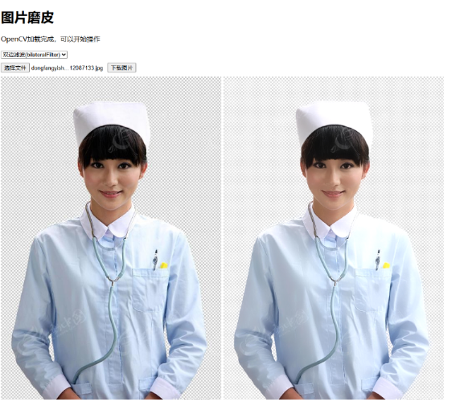

2024-06-16 13:25:35 · YinHao
1、图片处理依旧使用 canvas，首先，将图片继续转化为 canvas
2、获取图片像素参数，并对其进行计算，貌似很多人在用中值滤波算法
3、利用 OpenCV 库来实现，OpenCV.js 是 OpenCV（开放源代码计算机视觉库的 JavaScript 版本，使用前我们先进行下载它，你可以去官方下载，也可以在这个项目中去拿：https://github.com/dnoyeb/opencv-js.git

<!DOCTYPE html>
<html>
<head>
<meta charset="UTF-8" />
<meta http-equiv="X-UA-Compatible" content="ie=edge" />
<meta name="viewport" content="width=device-width, initial-scale=1.0" />
<title>OpenCV.js</title>
<style type="text/css">
.inputoutput {
/* float: left; */
margin: 10px 0;
}
</style>
</head>
<body>
<h1>图片磨皮</h1>
<p id="status">准备加载……</p>
<select id="select">
<option value="bilateralFilter">双边滤波(bilateralFilter)</option>
</select>
<div>
<div class="inputoutput">
<!-- <img id="imageSrc" alt="No Image" /> -->
<div class="caption">
<input type="file" id="fileInput" name="file" />
<button onclick="download()">下载图片</button>
</div>
</div>
<div class="inputoutput">
<span id="imgWarp"></span>
<canvas id="canvasOutput"></canvas>
<!-- <div class="caption">canvasOutput</div> -->
</div>
</div>
<script
async
src="js/opencv.js"
onload="onOpenCvReady();"
type="text/javascript"
></script>
<script type="text/javascript">
// let imgElement = document.getElementById('imageSrc');
let imgElement = new Image();
let inputElement = document.getElementById("fileInput");
let select = document.getElementById("select");
inputElement.addEventListener(
"change",
(e) => {
imgElement.src = URL.createObjectURL(e.target.files[0]);
},
false
);
document.getElementById("imgWarp").appendChild(imgElement);
select.addEventListener(
"change",
(e) => {
// imgElement.src = URL.createObjectURL(e.target.files[0]);
console.log(select.value);
},
false
);
imgElement.onload = function () {
let mat = cv.imread(imgElement);
mat = bilateralFilter(mat, 4, 3);
cv.imshow("canvasOutput", mat);
mat.delete();
};
function onOpenCvReady() {
document.getElementById("status").innerHTML =
"OpenCV加载完成，可以开始操作";
}
function download() {
const canvas = document.getElementById("canvasOutput");
let newUrl = canvas.toDataURL("image/png");
let a = document.createElement("a");
a.href = newUrl;
a.download = "img.png";
a.click();
window.URL.revokeObjectURL(newUrl);
}
function bilateralFilter(image, value1, value2) {
let dst = new cv.Mat();
if (value1 == null || value1 == undefined) value1 = 3; //磨皮系数
if (value2 == null || value2 == undefined) value2 = 1; //细节系数 0.5 - 2
var dx = value1 * 5; //双边滤波参数
var fc = value1 * 12.5; //参数
var p = 0.1; //透明度
let temp1 = new cv.Mat(),
temp2 = new cv.Mat(),
temp3 = new cv.Mat(),
temp4 = new cv.Mat();
cv.cvtColor(image, image, cv.COLOR_RGBA2RGB, 0);
cv.bilateralFilter(image, temp1, dx, fc, fc); //bilateralFilter(Src)
let temp22 = new cv.Mat();
cv.subtract(temp1, image, temp22); //bilateralFilter(Src) - Src
cv.add(
temp22,
new cv.Mat(
image.rows,
image.cols,
image.type(),
new cv.Scalar(128, 128, 128, 128)
),
temp2
); //bilateralFilter(Src) - Src + 128
cv.GaussianBlur(
temp2,
temp3,
new cv.Size(2 * value2 - 1, 2 * value2 - 1),
0,
0
);
//2 * GuassBlur(bilateralFilter(Src) - Src + 128) - 1
let temp44 = new cv.Mat();
temp3.convertTo(temp44, temp3.type(), 2, -255);
//2 * GuassBlur(bilateralFilter(Src) - Src + 128) - 256
cv.add(image, temp44, temp4);
cv.addWeighted(image, p, temp4, 1 - p, 0.0, dst);
//Src * (100 - Opacity)
cv.add(
dst,
new cv.Mat(
image.rows,
image.cols,
image.type(),
new cv.Scalar(10, 10, 10, 0)
),
dst
);
//(Src * (100 - Opacity) + (Src + 2 * GuassBlur(bilateralFilter(Src) - Src + 128) - 256) * Opacity) /100
return dst;
}
</script>
</body>
</html>
opencv.js 文件下载地址：https://github.com/dnoyeb/opencv-js.git